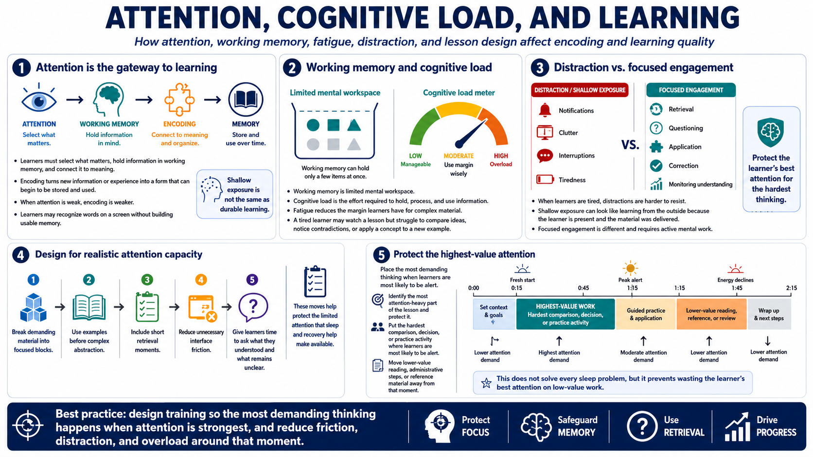

Attention, Encoding, and Learning Readiness
Connecting to LMS... Progress: in progress

Narration
Attention is the gateway to learning. Learners have to select what matters, hold information in working memory, and connect it to meaning. Encoding is the process of turning new information or experience into a form that can begin to be stored and used. When attention is weak, encoding is weaker too. The learner may recognize words on the screen without building a usable memory.
Working memory and cognitive load are central here. Working memory is limited mental workspace. Cognitive load is the effort required to hold, process, and use information. Fatigue reduces the margin learners have for complex material. A tired learner may be able to watch a lesson, but struggle to compare ideas, notice contradictions, or apply a concept to a new example.
Distraction adds another layer. When learners are tired, notifications, clutter, and interruptions become harder to resist. Shallow exposure can look like learning from the outside because the learner is present and the material was delivered. Focused engagement is different. It includes retrieval, questioning, application, correction, and monitoring whether the material still makes sense.
Design study and training sessions around realistic attention capacity. Break demanding material into focused blocks. Use examples before complex abstraction. Include short retrieval moments. Reduce unnecessary interface friction. Give learners enough time to ask what they understood and what remains unclear. These moves help protect the limited attention that sleep and recovery help make available.
A useful design habit is to identify the most attention-heavy part of the lesson and protect it. Put the hardest comparison, decision, or practice activity where learners are most likely to be alert. Move lower-value reading, administrative steps, or reference material away from that moment. This does not solve every sleep problem, but it keeps the course from wasting the learner's best attention on low-value work.